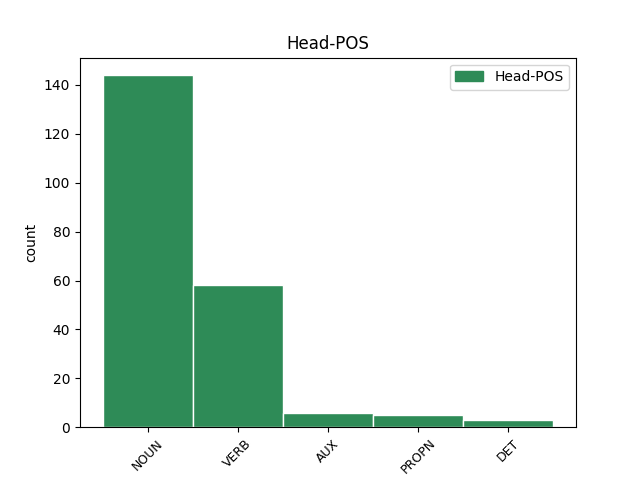

Distribution of features within this leaf

Agreement Rules sorted by frequency.
- When the dependent token is the conjunct(conj) of the head token, and the head token is NOUN and the dependent token is NOUN.
1 Але _ _ _ _ 0 _ _ _
2 вось _ _ _ _ 0 _ _ _
3 у _ _ _ _ 0 _ _ _
4 той _ _ _ _ 0 _ _ _
5 самы _ _ _ _ 0 _ _ _
6 час _ _ _ _ 0 _ _ _
7 , _ _ _ _ 0 _ _ _
8 даўным-даўно _ _ _ _ 0 _ _ _
9 , _ _ _ _ 0 _ _ _
10 жыў _ _ _ _ 0 _ _ _
11 адзін _ _ _ _ 0 _ _ _
12 такі _ _ _ _ 0 _ _ _
13 Слон слон NOUN _ Animacy=Anim|Case=Nom|Gender=Masc|Number=Sing 0 _ _ _
14 , _ _ _ _ 0 _ _ _
15 або _ _ _ _ 0 _ _ _
16 , _ _ _ _ 0 _ _ _
17 лепш _ _ _ _ 0 _ _ _
18 сказаць _ _ _ _ 0 _ _ _
19 , _ _ _ _ 0 _ _ _
20 Слонік слонік NOUN _ Animacy=Anim|Case=Nom|Gender=Masc|Number=Sing 13 conj _ SpaceAfter=No
21 , _ _ _ _ 0 _ _ _
22 які _ _ _ _ 0 _ _ _
23 быў _ _ _ _ 0 _ _ _
24 страшэнна _ _ _ _ 0 _ _ _
25 дапытлівы _ _ _ _ 0 _ _ _
26 , _ _ _ _ 0 _ _ _
27 і _ _ _ _ 0 _ _ _
28 каго _ _ _ _ 0 _ _ _
29 , _ _ _ _ 0 _ _ _
30 бывала _ _ _ _ 0 _ _ _
31 , _ _ _ _ 0 _ _ _
32 ні _ _ _ _ 0 _ _ _
33 ўбачыць _ _ _ _ 0 _ _ _
34 , _ _ _ _ 0 _ _ _
35 да _ _ _ _ 0 _ _ _
36 ўсіх _ _ _ _ 0 _ _ _
37 прыстае _ _ _ _ 0 _ _ _
38 з _ _ _ _ 0 _ _ _
39 роспытамі _ _ _ _ 0 _ _ _
40 . _ _ _ _ 0 _ _ _
1 Ён _ _ _ _ 0 _ _ _
2 прыставаў _ _ _ _ 0 _ _ _
3 да _ _ _ _ 0 _ _ _
4 свайго _ _ _ _ 0 _ _ _
5 даўганогага _ _ _ _ 0 _ _ _
6 дзядзькі _ _ _ _ 0 _ _ _
7 Жырафа _ _ _ _ 0 _ _ _
8 і _ _ _ _ 0 _ _ _
9 пытаўся _ _ _ _ 0 _ _ _
10 , _ _ _ _ 0 _ _ _
11 чаму _ _ _ _ 0 _ _ _
12 ў _ _ _ _ 0 _ _ _
13 яго _ _ _ _ 0 _ _ _
14 на _ _ _ _ 0 _ _ _
15 скуры _ _ _ _ 0 _ _ _
16 плямы _ _ _ _ 0 _ _ _
17 , _ _ _ _ 0 _ _ _
18 і _ _ _ _ 0 _ _ _
19 высачэзны _ _ _ _ 0 _ _ _
20 дзядзька _ _ _ _ 0 _ _ _
21 Жыраф _ _ _ _ 0 _ _ _
22 даваў даваць VERB VBC Aspect=Imp|Gender=Masc|Mood=Ind|Number=Sing|Tense=Past|VerbForm=Fin|Voice=Act 0 _ _ _
23 яму _ _ _ _ 0 _ _ _
24 за _ _ _ _ 0 _ _ _
25 гэта _ _ _ _ 0 _ _ _
26 грымака грымак NOUN RB Animacy=Inan|Case=Acc|Gender=Masc|Number=Sing 22 comp:obj _ _
27 сваім _ _ _ _ 0 _ _ _
28 цвёрдым _ _ _ _ 0 _ _ _
29 , _ _ _ _ 0 _ _ _
30 як _ _ _ _ 0 _ _ _
31 камень _ _ _ _ 0 _ _ _
32 , _ _ _ _ 0 _ _ _
33 капытом _ _ _ _ 0 _ _ _
34 . _ _ _ _ 0 _ _ _
1 Ён _ _ _ _ 0 _ _ _
2 прыставаў _ _ _ _ 0 _ _ _
3 да _ _ _ _ 0 _ _ _
4 свайго _ _ _ _ 0 _ _ _
5 даўганогага _ _ _ _ 0 _ _ _
6 дзядзькі _ _ _ _ 0 _ _ _
7 Жырафа _ _ _ _ 0 _ _ _
8 і _ _ _ _ 0 _ _ _
9 пытаўся _ _ _ _ 0 _ _ _
10 , _ _ _ _ 0 _ _ _
11 чаму _ _ _ _ 0 _ _ _
12 ў _ _ _ _ 0 _ _ _
13 яго _ _ _ _ 0 _ _ _
14 на _ _ _ _ 0 _ _ _
15 скуры _ _ _ _ 0 _ _ _
16 плямы _ _ _ _ 0 _ _ _
17 , _ _ _ _ 0 _ _ _
18 і _ _ _ _ 0 _ _ _
19 высачэзны _ _ _ _ 0 _ _ _
20 дзядзька дзядзька NOUN NN Animacy=Anim|Case=Nom|Gender=Masc|Number=Sing 0 _ _ _
21 Жыраф жыраф NOUN NNP Animacy=Anim|Case=Nom|Gender=Masc|Number=Sing 20 appos _ _
22 даваў _ _ _ _ 0 _ _ _
23 яму _ _ _ _ 0 _ _ _
24 за _ _ _ _ 0 _ _ _
25 гэта _ _ _ _ 0 _ _ _
26 грымака _ _ _ _ 0 _ _ _
27 сваім _ _ _ _ 0 _ _ _
28 цвёрдым _ _ _ _ 0 _ _ _
29 , _ _ _ _ 0 _ _ _
30 як _ _ _ _ 0 _ _ _
31 камень _ _ _ _ 0 _ _ _
32 , _ _ _ _ 0 _ _ _
33 капытом _ _ _ _ 0 _ _ _
34 . _ _ _ _ 0 _ _ _
1 У _ _ _ _ 0 _ _ _
2 канцы _ _ _ _ 0 _ _ _
3 месяца _ _ _ _ 0 _ _ _
4 ў _ _ _ _ 0 _ _ _
5 Беларусі _ _ _ _ 0 _ _ _
6 магчымыя _ _ _ _ 0 _ _ _
7 ападкі _ _ _ _ 0 _ _ _
8 , _ _ _ _ 0 _ _ _
9 у _ _ _ _ 0 _ _ _
10 тым той DET DT Case=Loc|Gender=Masc|Number=Sing|PronType=Dem 0 _ _ _
11 ліку лік NOUN NN Animacy=Inan|Case=Loc|Gender=Masc|Number=Sing 10 unk@fixed _ SpaceAfter=No
12 , _ _ _ _ 0 _ _ _
13 мокры _ _ _ _ 0 _ _ _
14 снег _ _ _ _ 0 _ _ _
15 , _ _ _ _ 0 _ _ _
16 перадае _ _ _ _ 0 _ _ _
17 БелаПАН _ _ _ _ 0 _ _ _
18 . _ _ _ _ 0 _ _ _
1 У _ _ _ _ 0 _ _ _
2 iнтэрнэце _ _ _ _ 0 _ _ _
3 ўжо _ _ _ _ 0 _ _ _
4 сёння _ _ _ _ 0 _ _ _
5 можна _ _ _ _ 0 _ _ _
6 знайсцi _ _ _ _ 0 _ _ _
7 мноства _ _ _ _ 0 _ _ _
8 падобных _ _ _ _ 0 _ _ _
9 прапаноў _ _ _ _ 0 _ _ _
10 з _ _ _ _ 0 _ _ _
11 Польшчы _ _ _ _ 0 _ _ _
12 , _ _ _ _ 0 _ _ _
13 Чэхii _ _ _ _ 0 _ _ _
14 , _ _ _ _ 0 _ _ _
15 Iспанii Iспанii PROPN RB Animacy=Inan|Case=Gen|Gender=Fem|Number=Sing 0 _ _ _
16 і _ _ _ _ 0 _ _ _
17 iншых _ _ _ _ 0 _ _ _
18 краiн краiн NOUN NN Animacy=Inan|Case=Gen|Gender=Fem|Number=Plur 15 conj _ SpaceAfter=No
19 . _ _ _ _ 0 _ _ _
1 Пры _ _ _ _ 0 _ _ _
2 гэтым _ _ _ _ 0 _ _ _
3 характэрны _ _ _ _ 0 _ _ _
4 рост _ _ _ _ 0 _ _ _
5 рублёвых _ _ _ _ 0 _ _ _
6 укладаў _ _ _ _ 0 _ _ _
7 ( _ _ _ _ 0 _ _ _
8 на _ _ _ _ 0 _ _ _
9 2,5 _ _ _ _ 0 _ _ _
10 трлн трлн NOUN NN Animacy=Inan|Case=Gen|Gender=Masc|Number=Plur 11 mod@gov _ _
11 рублёў рубель NOUN NN Animacy=Inan|Case=Gen|Gender=Masc|Number=Plur 0 _ _ _
12 за _ _ _ _ 0 _ _ _
13 два _ _ _ _ 0 _ _ _
14 месяцы _ _ _ _ 0 _ _ _
15 ) _ _ _ _ 0 _ _ _
16 . _ _ _ _ 0 _ _ _
1 Ён _ _ _ _ 0 _ _ _
2 прыставаў _ _ _ _ 0 _ _ _
3 да _ _ _ _ 0 _ _ _
4 свайго _ _ _ _ 0 _ _ _
5 даўганогага _ _ _ _ 0 _ _ _
6 дзядзькі _ _ _ _ 0 _ _ _
7 Жырафа _ _ _ _ 0 _ _ _
8 і _ _ _ _ 0 _ _ _
9 пытаўся _ _ _ _ 0 _ _ _
10 , _ _ _ _ 0 _ _ _
11 чаму _ _ _ _ 0 _ _ _
12 ў _ _ _ _ 0 _ _ _
13 яго _ _ _ _ 0 _ _ _
14 на _ _ _ _ 0 _ _ _
15 скуры _ _ _ _ 0 _ _ _
16 плямы _ _ _ _ 0 _ _ _
17 , _ _ _ _ 0 _ _ _
18 і _ _ _ _ 0 _ _ _
19 высачэзны _ _ _ _ 0 _ _ _
20 дзядзька _ _ _ _ 0 _ _ _
21 Жыраф _ _ _ _ 0 _ _ _
22 даваў даваць VERB VBC Aspect=Imp|Gender=Masc|Mood=Ind|Number=Sing|Tense=Past|VerbForm=Fin|Voice=Act 0 _ _ _
23 яму _ _ _ _ 0 _ _ _
24 за _ _ _ _ 0 _ _ _
25 гэта _ _ _ _ 0 _ _ _
26 грымака _ _ _ _ 0 _ _ _
27 сваім _ _ _ _ 0 _ _ _
28 цвёрдым _ _ _ _ 0 _ _ _
29 , _ _ _ _ 0 _ _ _
30 як _ _ _ _ 0 _ _ _
31 камень _ _ _ _ 0 _ _ _
32 , _ _ _ _ 0 _ _ _
33 капытом капыт NOUN NN Animacy=Inan|Case=Ins|Gender=Masc|Number=Sing 22 comp:obl _ SpaceAfter=No
34 . _ _ _ _ 0 _ _ _
1 Акрамя _ _ _ _ 0 _ _ _
2 гэтага _ _ _ _ 0 _ _ _
3 , _ _ _ _ 0 _ _ _
4 спецыяліст _ _ _ _ 0 _ _ _
5 паведаміў _ _ _ _ 0 _ _ _
6 , _ _ _ _ 0 _ _ _
7 што _ _ _ _ 0 _ _ _
8 ў _ _ _ _ 0 _ _ _
9 Беларусі _ _ _ _ 0 _ _ _
10 распрацаваны распрацаваць VERB _ Aspect=Perf|Gender=Masc|Number=Sing|Tense=Past|Variant=Short|VerbForm=Part|Voice=Pass 0 _ _ _
11 рэгламент рэгламент NOUN _ Animacy=Inan|Case=Nom|Gender=Masc|Number=Sing 10 subj@pass _ _
12 вакуумавання _ _ _ _ 0 _ _ _
13 бульбы _ _ _ _ 0 _ _ _
14 . _ _ _ _ 0 _ _ _
1 Гэта _ _ _ _ 0 _ _ _
2 быў быць AUX VBC Aspect=Imp|Gender=Masc|Mood=Ind|Number=Sing|Tense=Past|VerbForm=Fin|Voice=Act 0 _ _ _
3 штучны _ _ _ _ 0 _ _ _
4 вадаём вадаём NOUN NN Animacy=Inan|Case=Nom|Gender=Masc|Number=Sing 2 comp:pred _ SpaceAfter=No
5 , _ _ _ _ 0 _ _ _
6 пакручасты _ _ _ _ 0 _ _ _
7 і _ _ _ _ 0 _ _ _
8 зарослы _ _ _ _ 0 _ _ _
9 , _ _ _ _ 0 _ _ _
10 утвораны _ _ _ _ 0 _ _ _
11 старой _ _ _ _ 0 _ _ _
12 бабровай _ _ _ _ 0 _ _ _
13 запрудай _ _ _ _ 0 _ _ _
14 , _ _ _ _ 0 _ _ _
15 якая _ _ _ _ 0 _ _ _
16 так _ _ _ _ 0 _ _ _
17 надзейна _ _ _ _ 0 _ _ _
18 перагарадзіла _ _ _ _ 0 _ _ _
19 ручай _ _ _ _ 0 _ _ _
20 , _ _ _ _ 0 _ _ _
21 што _ _ _ _ 0 _ _ _
22 атрымалася _ _ _ _ 0 _ _ _
23 азярцо _ _ _ _ 0 _ _ _
24 з _ _ _ _ 0 _ _ _
25 крутымі _ _ _ _ 0 _ _ _
26 , _ _ _ _ 0 _ _ _
27 густа _ _ _ _ 0 _ _ _
28 зарослымі _ _ _ _ 0 _ _ _
29 лесам _ _ _ _ 0 _ _ _
30 берагамі _ _ _ _ 0 _ _ _
31 . _ _ _ _ 0 _ _ _
1 Кансультантам кансультант NOUN NN Animacy=Anim|Case=Ins|Gender=Masc|Number=Sing 2 comp:pred _ _
2 запрошаны запросiць VERB VBNH Aspect=Perf|Gender=Masc|Number=Sing|Tense=Past|Variant=Short|VerbForm=Part|Voice=Pass 0 _ _ _
3 вядомы _ _ _ _ 0 _ _ _
4 музычны _ _ _ _ 0 _ _ _
5 прадзюсер _ _ _ _ 0 _ _ _
6 і _ _ _ _ 0 _ _ _
7 кампазітар _ _ _ _ 0 _ _ _
8 з _ _ _ _ 0 _ _ _
9 Грэцыі _ _ _ _ 0 _ _ _
10 Дзімітрыс _ _ _ _ 0 _ _ _
11 Кантопулас _ _ _ _ 0 _ _ _
12 . _ _ _ _ 0 _ _ _
1 У _ _ _ _ 0 _ _ _
2 аўторак _ _ _ _ 0 _ _ _
3 , _ _ _ _ 0 _ _ _
4 20 _ _ _ _ 0 _ _ _
5 сакавіка _ _ _ _ 0 _ _ _
6 , _ _ _ _ 0 _ _ _
7 брытанская _ _ _ _ 0 _ _ _
8 газета _ _ _ _ 0 _ _ _
9 Daily _ _ _ _ 0 _ _ _
10 Telegraph _ _ _ _ 0 _ _ _
11 са _ _ _ _ 0 _ _ _
12 спасылкай _ _ _ _ 0 _ _ _
13 на _ _ _ _ 0 _ _ _
14 дыпламатычныя _ _ _ _ 0 _ _ _
15 крыніцы _ _ _ _ 0 _ _ _
16 паведаміла _ _ _ _ 0 _ _ _
17 , _ _ _ _ 0 _ _ _
18 што _ _ _ _ 0 _ _ _
19 кіраўнікі _ _ _ _ 0 _ _ _
20 МЗС _ _ _ _ 0 _ _ _
21 ЕС _ _ _ _ 0 _ _ _
22 , _ _ _ _ 0 _ _ _
23 у _ _ _ _ 0 _ _ _
24 прыватнасці _ _ _ _ 0 _ _ _
25 , _ _ _ _ 0 _ _ _
26 уключаць _ _ _ _ 0 _ _ _
27 у _ _ _ _ 0 _ _ _
28 " _ _ _ _ 0 _ _ _
29 чорны _ _ _ _ 0 _ _ _
30 спіс _ _ _ _ 0 _ _ _
31 " _ _ _ _ 0 _ _ _
32 Асму Асма PROPN NNP Animacy=Anim|Case=Acc|Gender=Fem|Number=Sing 0 _ _ _
33 Асад _ _ _ _ 0 _ _ _
34 , _ _ _ _ 0 _ _ _
35 жонку жонка NOUN NN Animacy=Anim|Case=Acc|Gender=Fem|Number=Sing 32 appos _ _
36 прэзідэнта _ _ _ _ 0 _ _ _
37 краіны _ _ _ _ 0 _ _ _
38 Башара _ _ _ _ 0 _ _ _
39 Асада _ _ _ _ 0 _ _ _
40 . _ _ _ _ 0 _ _ _
1 Але _ _ _ _ 0 _ _ _
2 галоўнымі _ _ _ _ 0 _ _ _
3 гераінямі _ _ _ _ 0 _ _ _
4 былі _ _ _ _ 0 _ _ _
5 пятнаццаць _ _ _ _ 0 _ _ _
6 дзяўчат _ _ _ _ 0 _ _ _
7 — _ _ _ _ 0 _ _ _
8 удзельніц _ _ _ _ 0 _ _ _
9 нацыянальнага _ _ _ _ 0 _ _ _
10 фіналу _ _ _ _ 0 _ _ _
11 Міжнароднага _ _ _ _ 0 _ _ _
12 міжуніверсітэцкага _ _ _ _ 0 _ _ _
13 конкурсу _ _ _ _ 0 _ _ _
14 грацыі _ _ _ _ 0 _ _ _
15 і _ _ _ _ 0 _ _ _
16 артыстычнага _ _ _ _ 0 _ _ _
17 майстэрства _ _ _ _ 0 _ _ _
18 “ _ _ _ _ 0 _ _ _
19 Каралева каралева NOUN _ Animacy=Anim|Case=Nom|Gender=Fem|Number=Sing 0 _ _ _
20 Вясна вясна NOUN _ Animacy=Inan|Case=Nom|Gender=Fem|Number=Sing 19 flat _ _
21 — _ _ _ _ 0 _ _ _
22 2017 _ _ _ _ 0 _ _ _
23 ” _ _ _ _ 0 _ _ _
24 . _ _ _ _ 0 _ _ _
1 І _ _ _ _ 0 _ _ _
2 толькi _ _ _ _ 0 _ _ _
3 ў _ _ _ _ 0 _ _ _
4 Мiнску _ _ _ _ 0 _ _ _
5 быў быць AUX _ Aspect=Imp|Gender=Masc|Mood=Ind|Number=Sing|Tense=Past|VerbForm=Fin|Voice=Act 0 _ _ _
6 адзначаны _ _ _ _ 0 _ _ _
7 летась _ _ _ _ 0 _ _ _
8 рост рост NOUN NN Animacy=Inan|Case=Nom|Gender=Masc|Number=Sing 5 subj@pass _ _
9 рэальных _ _ _ _ 0 _ _ _
10 заробкаў _ _ _ _ 0 _ _ _
11 работнiкаў _ _ _ _ 0 _ _ _
12 аховы _ _ _ _ 0 _ _ _
13 здароўя _ _ _ _ 0 _ _ _
14 на _ _ _ _ 0 _ _ _
15 1,4 _ _ _ _ 0 _ _ _
16 працэнта _ _ _ _ 0 _ _ _
17 , _ _ _ _ 0 _ _ _
18 што _ _ _ _ 0 _ _ _
19 з'яўляецца _ _ _ _ 0 _ _ _
20 сведчаннем _ _ _ _ 0 _ _ _
21 увагi _ _ _ _ 0 _ _ _
22 да _ _ _ _ 0 _ _ _
23 нашай _ _ _ _ 0 _ _ _
24 галiны _ _ _ _ 0 _ _ _
25 з _ _ _ _ 0 _ _ _
26 боку _ _ _ _ 0 _ _ _
27 сталiчных _ _ _ _ 0 _ _ _
28 уладаў _ _ _ _ 0 _ _ _
29 . _ _ _ _ 0 _ _ _
Disagree Examples:
1 У _ _ _ _ 0 _ _ _
2 ходзе _ _ _ _ 0 _ _ _
3 візіту _ _ _ _ 0 _ _ _
4 беларускай _ _ _ _ 0 _ _ _
5 дэлегацыі _ _ _ _ 0 _ _ _
6 ў _ _ _ _ 0 _ _ _
7 Сеул _ _ _ _ 0 _ _ _
8 16 _ _ _ _ 0 _ _ _
9 сакавіка _ _ _ _ 0 _ _ _
10 кампанія _ _ _ _ 0 _ _ _
11 падпісала падпісаць VERB VBC Aspect=Perf|Gender=Fem|Mood=Ind|Number=Sing|Tense=Past|VerbForm=Fin|Voice=Act 0 _ _ _
12 мемарандум мемарандум NOUN NN Animacy=Inan|Case=Acc|Gender=Masc|Number=Sing 11 comp:obj _ _
13 аб _ _ _ _ 0 _ _ _
14 узаемаразуменні _ _ _ _ 0 _ _ _
15 з _ _ _ _ 0 _ _ _
16 Нацыянальным _ _ _ _ 0 _ _ _
17 агенцтвам _ _ _ _ 0 _ _ _
18 інвестыцый _ _ _ _ 0 _ _ _
19 і _ _ _ _ 0 _ _ _
20 прыватызацыі _ _ _ _ 0 _ _ _
21 Беларусі _ _ _ _ 0 _ _ _
22 . _ _ _ _ 0 _ _ _
1 " _ _ _ _ 0 _ _ _
2 Эксперты _ _ _ _ 0 _ _ _
3 кампаніі _ _ _ _ 0 _ _ _
4 валодаюць _ _ _ _ 0 _ _ _
5 вялікім _ _ _ _ 0 _ _ _
6 вопытам _ _ _ _ 0 _ _ _
7 угодаў _ _ _ _ 0 _ _ _
8 з _ _ _ _ 0 _ _ _
9 удзелам _ _ _ _ 0 _ _ _
10 карэйскага _ _ _ _ 0 _ _ _
11 капіталу _ _ _ _ 0 _ _ _
12 па _ _ _ _ 0 _ _ _
13 стварэнні стварэнне NOUN NN Animacy=Inan|Case=Dat|Gender=Neut|Number=Sing 0 _ _ _
14 сумесных _ _ _ _ 0 _ _ _
15 прадпрыемстваў _ _ _ _ 0 _ _ _
16 , _ _ _ _ 0 _ _ _
17 энергетычных _ _ _ _ 0 _ _ _
18 праектау праект NOUN NN Animacy=Inan|Case=Gen|Gender=Masc|Number=Plur 13 conj _ SpaceAfter=No
19 , _ _ _ _ 0 _ _ _
20 праектнага _ _ _ _ 0 _ _ _
21 фінансавання _ _ _ _ 0 _ _ _
22 . _ _ _ _ 0 _ _ _
1 " _ _ _ _ 0 _ _ _
2 Эксперты _ _ _ _ 0 _ _ _
3 кампаніі _ _ _ _ 0 _ _ _
4 валодаюць _ _ _ _ 0 _ _ _
5 вялікім _ _ _ _ 0 _ _ _
6 вопытам _ _ _ _ 0 _ _ _
7 угодаў _ _ _ _ 0 _ _ _
8 з _ _ _ _ 0 _ _ _
9 удзелам _ _ _ _ 0 _ _ _
10 карэйскага _ _ _ _ 0 _ _ _
11 капіталу _ _ _ _ 0 _ _ _
12 па _ _ _ _ 0 _ _ _
13 стварэнні _ _ _ _ 0 _ _ _
14 сумесных _ _ _ _ 0 _ _ _
15 прадпрыемстваў _ _ _ _ 0 _ _ _
16 , _ _ _ _ 0 _ _ _
17 энергетычных _ _ _ _ 0 _ _ _
18 праектау праект NOUN NN Animacy=Inan|Case=Gen|Gender=Masc|Number=Plur 0 _ _ _
19 , _ _ _ _ 0 _ _ _
20 праектнага _ _ _ _ 0 _ _ _
21 фінансавання фінансаванне NOUN NN Animacy=Inan|Case=Gen|Gender=Neut|Number=Sing 18 conj _ SpaceAfter=No|SpellErr=Yes
22 . _ _ _ _ 0 _ _ _
1 Паводле _ _ _ _ 0 _ _ _
2 дасягнутых _ _ _ _ 0 _ _ _
3 дамоўленасцяў _ _ _ _ 0 _ _ _
4 , _ _ _ _ 0 _ _ _
5 Нацыянальнае _ _ _ _ 0 _ _ _
6 агенцтва _ _ _ _ 0 _ _ _
7 інвестыцый _ _ _ _ 0 _ _ _
8 і _ _ _ _ 0 _ _ _
9 прыватызацыі _ _ _ _ 0 _ _ _
10 Беларусі _ _ _ _ 0 _ _ _
11 і _ _ _ _ 0 _ _ _
12 Daeryook _ _ _ _ 0 _ _ _
13 & _ _ _ _ 0 _ _ _
14 Aju _ _ _ _ 0 _ _ _
15 Internatonal _ _ _ _ 0 _ _ _
16 Law _ _ _ _ 0 _ _ _
17 Firm _ _ _ _ 0 _ _ _
18 маюць _ _ _ _ 0 _ _ _
19 намер _ _ _ _ 0 _ _ _
20 праводзіць _ _ _ _ 0 _ _ _
21 двухбаковыя _ _ _ _ 0 _ _ _
22 кансультацыі кансультацыя NOUN NN Animacy=Inan|Case=Acc|Gender=Fem|Number=Plur 0 _ _ _
23 і _ _ _ _ 0 _ _ _
24 абмен абмен NOUN NN Animacy=Inan|Case=Acc|Gender=Masc|Number=Sing 22 conj _ _
25 інфармацыяй _ _ _ _ 0 _ _ _
26 з _ _ _ _ 0 _ _ _
27 мэтай _ _ _ _ 0 _ _ _
28 вывучэння _ _ _ _ 0 _ _ _
29 магчымасцяў _ _ _ _ 0 _ _ _
30 прыцягнення _ _ _ _ 0 _ _ _
31 прамых _ _ _ _ 0 _ _ _
32 замежных _ _ _ _ 0 _ _ _
33 інвестыцый _ _ _ _ 0 _ _ _
34 у _ _ _ _ 0 _ _ _
35 Беларусь _ _ _ _ 0 _ _ _
36 . _ _ _ _ 0 _ _ _
1 Як _ _ _ _ 0 _ _ _
2 распавялі _ _ _ _ 0 _ _ _
3 ў _ _ _ _ 0 _ _ _
4 міністэрстве _ _ _ _ 0 _ _ _
5 эканомікі _ _ _ _ 0 _ _ _
6 , _ _ _ _ 0 _ _ _
7 у _ _ _ _ 0 _ _ _
8 рамках _ _ _ _ 0 _ _ _
9 цяперашняга _ _ _ _ 0 _ _ _
10 візіту _ _ _ _ 0 _ _ _
11 ў _ _ _ _ 0 _ _ _
12 Сеул _ _ _ _ 0 _ _ _
13 дырэктар _ _ _ _ 0 _ _ _
14 Нацыянальнага _ _ _ _ 0 _ _ _
15 агенцтва _ _ _ _ 0 _ _ _
16 інвестыцый _ _ _ _ 0 _ _ _
17 і _ _ _ _ 0 _ _ _
18 прыватызацыі _ _ _ _ 0 _ _ _
19 Дзмітры _ _ _ _ 0 _ _ _
20 Клеўжыц _ _ _ _ 0 _ _ _
21 прэзентаваў прэзентаваць VERB VBC Aspect=Perf|Gender=Masc|Mood=Ind|Number=Sing|Tense=Past|VerbForm=Fin|Voice=Act 0 _ _ _
22 інвестыцыйныя _ _ _ _ 0 _ _ _
23 магчымасці магчымасць NOUN NN Animacy=Inan|Case=Acc|Gender=Fem|Number=Plur 21 comp:obj _ _
24 Беларусі _ _ _ _ 0 _ _ _
25 і _ _ _ _ 0 _ _ _
26 правёў _ _ _ _ 0 _ _ _
27 перамовы _ _ _ _ 0 _ _ _
28 з _ _ _ _ 0 _ _ _
29 намеснікам _ _ _ _ 0 _ _ _
30 міністра _ _ _ _ 0 _ _ _
31 інтэлектуальнай _ _ _ _ 0 _ _ _
32 эканомікі _ _ _ _ 0 _ _ _
33 Рэспублікі _ _ _ _ 0 _ _ _
34 Карэя _ _ _ _ 0 _ _ _
35 Мун _ _ _ _ 0 _ _ _
36 Чжэ _ _ _ _ 0 _ _ _
37 До _ _ _ _ 0 _ _ _
38 , _ _ _ _ 0 _ _ _
39 віцэ-прэзідэнтам _ _ _ _ 0 _ _ _
40 Карэйскага _ _ _ _ 0 _ _ _
41 агенцтва _ _ _ _ 0 _ _ _
42 па _ _ _ _ 0 _ _ _
43 прасоўванні _ _ _ _ 0 _ _ _
44 гандлю _ _ _ _ 0 _ _ _
45 і _ _ _ _ 0 _ _ _
46 інвестыцый _ _ _ _ 0 _ _ _
47 ( _ _ _ _ 0 _ _ _
48 KOTRA _ _ _ _ 0 _ _ _
49 ) _ _ _ _ 0 _ _ _
50 О _ _ _ _ 0 _ _ _
51 Сон _ _ _ _ 0 _ _ _
52 Гынам _ _ _ _ 0 _ _ _
53 і _ _ _ _ 0 _ _ _
54 радам _ _ _ _ 0 _ _ _
55 мясцовых _ _ _ _ 0 _ _ _
56 бізнэсоўцаў _ _ _ _ 0 _ _ _
57 . _ _ _ _ 0 _ _ _